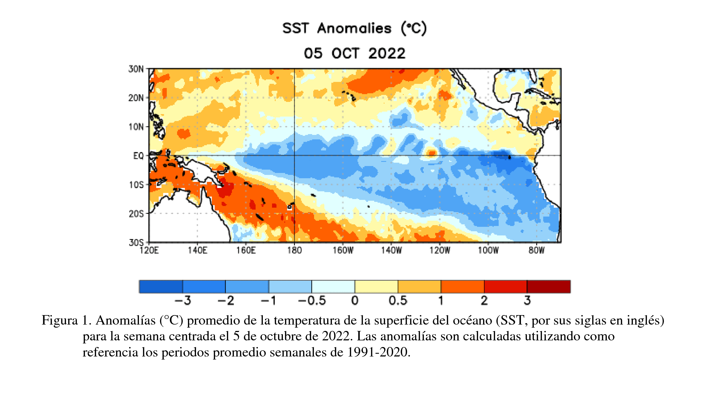

Actualización NIÑO/NIÑA (Octubre 2022)
El estado actual del fenómeno ENOS corresponde a una "NIÑA".
Se mantuvo el enfriamiento en el océano Pacífico ecuatorial entre 160°E y la costa Sudamericana. Durante septiembre los vientos alisios en el Pacífico ecuatorial se mantuvieron en promedio más intensos que sus valores normales y el Índice de Oscilación del Sur sigue manteniendo valores acordes a una fase fría.

De acuerdo a los modelos dinámicos y estadísticos, en promedio, en el trimestre octubre-noviembre-diciembre 2022 (OND), hay 89% de probabilidad de que se mantengan las condiciones de Niña.